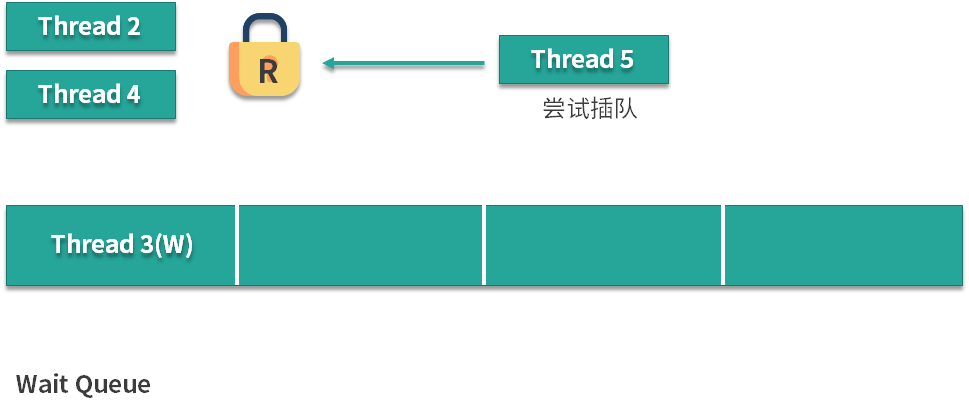
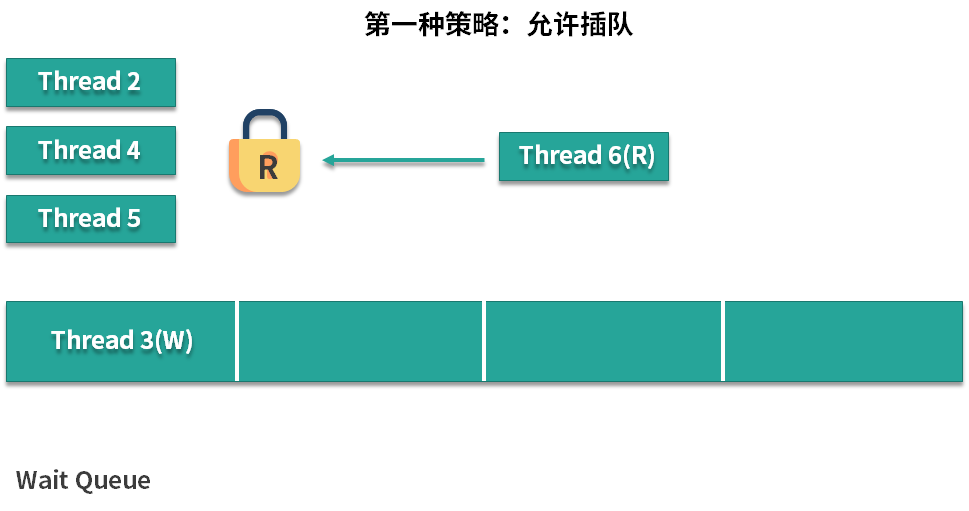
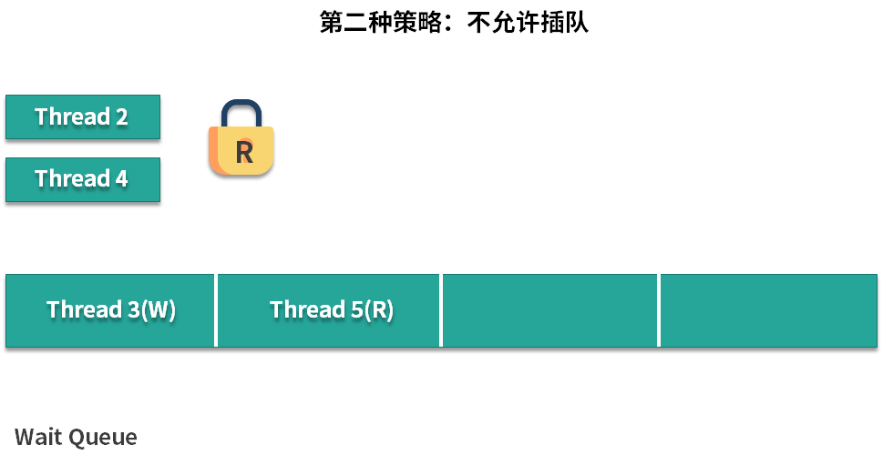
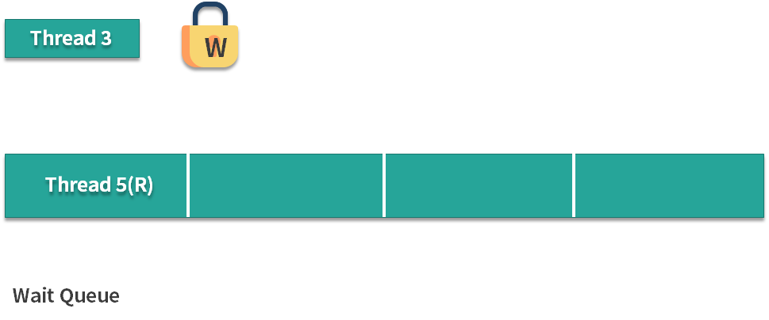

- 00 由点及面，搭建你的 Java 并发知识网.md.html
- 01 为何说只有 1 种实现线程的方法？.md.html
- 02 如何正确停止线程？为什么 volatile 标记位的停止方法是错误的？.md.html
- 03 线程是如何在 6 种状态之间转换的？.md.html
- 04 waitnotifynotifyAll 方法的使用注意事项？.md.html
- 05 有哪几种实现生产者消费者模式的方法？.md.html
- 06 一共有哪 3 类线程安全问题？.md.html
- 07 哪些场景需要额外注意线程安全问题？.md.html
- 08 为什么多线程会带来性能问题？.md.html
- 09 使用线程池比手动创建线程好在哪里？.md.html
- 10 线程池的各个参数的含义？.md.html
- 11 线程池有哪 4 种拒绝策略？.md.html
- 12 有哪 6 种常见的线程池？什么是 Java8 的 ForkJoinPool？.md.html
- 13 线程池常用的阻塞队列有哪些？.md.html
- 14 为什么不应该自动创建线程池？.md.html
- 15 合适的线程数量是多少？CPU 核心数和线程数的关系？.md.html
- 16 如何根据实际需要，定制自己的线程池？.md.html
- 17 如何正确关闭线程池？shutdown 和 shutdownNow 的区别？.md.html
- 18 线程池实现“线程复用”的原理？.md.html
- 19 你知道哪几种锁？分别有什么特点？.md.html
- 20 悲观锁和乐观锁的本质是什么？.md.html
- 21 如何看到 synchronized 背后的“monitor 锁”？.md.html
- 22 synchronized 和 Lock 孰优孰劣，如何选择？.md.html
- 23 Lock 有哪几个常用方法？分别有什么用？.md.html
- 24 讲一讲公平锁和非公平锁，为什么要“非公平”？.md.html
- 25 读写锁 ReadWriteLock 获取锁有哪些规则？.md.html
- 26 读锁应该插队吗？什么是读写锁的升降级？.md.html
- 27 什么是自旋锁？自旋的好处和后果是什么呢？.md.html
- 28 JVM 对锁进行了哪些优化？.md.html
- 29 HashMap 为什么是线程不安全的？.md.html
- 30 ConcurrentHashMap 在 Java7 和 8 有何不同？.md.html
- 31 为什么 Map 桶中超过 8 个才转为红黑树？.md.html
- 32 同样是线程安全，ConcurrentHashMap 和 Hashtable 的区别.md.html
- 33 CopyOnWriteArrayList 有什么特点？.md.html
- 34 什么是阻塞队列？.md.html
- 35 阻塞队列包含哪些常用的方法？add、offer、put 等方法的区别？.md.html
- 36 有哪几种常见的阻塞队列？.md.html
- 37 阻塞和非阻塞队列的并发安全原理是什么？.md.html
- 38 如何选择适合自己的阻塞队列？.md.html
- 39 原子类是如何利用 CAS 保证线程安全的？.md.html
- 40 AtomicInteger 在高并发下性能不好，如何解决？为什么？.md.html
- 41 原子类和 volatile 有什么异同？.md.html
- 42 AtomicInteger 和 synchronized 的异同点？.md.html
- 43 Java 8 中 Adder 和 Accumulator 有什么区别？.md.html
- 44 ThreadLocal 适合用在哪些实际生产的场景中？.md.html
- 45 ThreadLocal 是用来解决共享资源的多线程访问的问题吗？.md.html
- 46 多个 ThreadLocal 在 Thread 中的 threadlocals 里是怎么存储的？.md.html
- 47 内存泄漏——为何每次用完 ThreadLocal 都要调用 remove()？.md.html
- 48 Callable 和 Runnable 的不同？.md.html
- 49 Future 的主要功能是什么？.md.html
- 50 使用 Future 有哪些注意点？Future 产生新的线程了吗？.md.html
- 51 如何利用 CompletableFuture 实现“旅游平台”问题？.md.html
- 52 信号量能被 FixedThreadPool 替代吗？.md.html
- 53 CountDownLatch 是如何安排线程执行顺序的？.md.html
- 54 CyclicBarrier 和 CountdownLatch 有什么异同？.md.html
- 55 Condition、object.wait() 和 notify() 的关系？.md.html
- 56 讲一讲什么是 Java 内存模型？.md.html
- 57 什么是指令重排序？为什么要重排序？.md.html
- 58 Java 中的原子操作有哪些注意事项？.md.html
- 59 什么是“内存可见性”问题？.md.html
- 60 主内存和工作内存的关系？.md.html
- 61 什么是 happens-before 规则？.md.html
- 62 volatile 的作用是什么？与 synchronized 有什么异同？.md.html
- 63 单例模式的双重检查锁模式为什么必须加 volatile？.md.html
- 64 你知道什么是 CAS 吗？.md.html
- 65 CAS 和乐观锁的关系，什么时候会用到 CAS？.md.html
- 66 CAS 有什么缺点？.md.html
- 67 如何写一个必然死锁的例子？.md.html
- 68 发生死锁必须满足哪 4 个条件？.md.html
- 69 如何用命令行和代码定位死锁？.md.html
- 70 有哪些解决死锁问题的策略？.md.html
- 71 讲一讲经典的哲学家就餐问题.md.html
- 72 final 的三种用法是什么？.md.html
- 73 为什么加了 final 却依然无法拥有“不变性”？.md.html
- 74 为什么 String 被设计为是不可变的？.md.html
- 75 为什么需要 AQS？AQS 的作用和重要性是什么？.md.html
- 76 AQS 的内部原理是什么样的？.md.html
- 77 AQS 在 CountDownLatch 等类中的应用原理是什么？.md.html
- 78 一份独家的 Java 并发工具图谱.md.html
26 读锁应该插队吗？什么是读写锁的升降级？
在本课时我们主要讲解读锁应该插队吗?以及什么是读写锁的升降级。
读锁插队策略
首先，我们来看一下读锁的插队策略，在这里先快速回顾一下在 24 课时公平与非公平锁中讲到的 ReentrantLock，如果锁被设置为非公平，那么它是可以在前面线程释放锁的瞬间进行插队的，而不需要进行排队。在读写锁这里，策略也是这样的吗？
首先，我们看到 ReentrantReadWriteLock 可以设置为公平或者非公平，代码如下：
公平锁：
ReentrantReadWriteLock reentrantReadWriteLock = new ReentrantReadWriteLock(true);
非公平锁：
ReentrantReadWriteLock reentrantReadWriteLock = new ReentrantReadWriteLock(false);
如果是公平锁，我们就在构造函数的参数中传入 true，如果是非公平锁，就在构造函数的参数中传入 false，默认是非公平锁。在获取读锁之前，线程会检查 readerShouldBlock() 方法，同样，在获取写锁之前，线程会检查 writerShouldBlock() 方法，来决定是否需要插队或者是去排队。
首先看公平锁对于这两个方法的实现：
final boolean writerShouldBlock() {
return hasQueuedPredecessors();
}
final boolean readerShouldBlock() {
return hasQueuedPredecessors();
}
很明显，在公平锁的情况下，只要等待队列中有线程在等待，也就是 hasQueuedPredecessors() 返回 true 的时候，那么 writer 和 reader 都会 block，也就是一律不允许插队，都乖乖去排队，这也符合公平锁的思想。
下面让我们来看一下非公平锁的实现：
final boolean writerShouldBlock() {
return false; // writers can always barge
}
final boolean readerShouldBlock() {
return apparentlyFirstQueuedIsExclusive();
}
在 writerShouldBlock() 这个方法中始终返回 false，可以看出，对于想获取写锁的线程而言，由于返回值是 false，所以它是随时可以插队的，这就和我们的 ReentrantLock 的设计思想是一样的，但是读锁却不一样。这里实现的策略很有意思，先让我们来看下面这种场景：
假设线程 2 和线程 4 正在同时读取，线程 3 想要写入，但是由于线程 2 和线程 4 已经持有读锁了，所以线程 3 就进入等待队列进行等待。此时，线程 5 突然跑过来想要插队获取读锁：
 面对这种情况有两种应对策略：
第一种策略：允许插队
由于现在有线程在读，而线程 5 又不会特别增加它们读的负担，因为线程们可以共用这把锁，所以第一种策略就是让线程 5 直接加入到线程 2 和线程 4 一起去读取。
这种策略看上去增加了效率，但是有一个严重的问题，那就是如果想要读取的线程不停地增加，比如线程 6，那么线程 6 也可以插队，这就会导致读锁长时间内不会被释放，导致线程 3 长时间内拿不到写锁，也就是那个需要拿到写锁的线程会陷入“饥饿”状态，它将在长时间内得不到执行。

第二种策略：不允许插队
这种策略认为由于线程 3 已经提前等待了，所以虽然线程 5 如果直接插队成功，可以提高效率，但是我们依然让线程 5 去排队等待：
 按照这种策略线程 5 会被放入等待队列中，并且排在线程 3 的后面，让线程 3 优先于线程 5 执行，这样可以避免“饥饿”状态，这对于程序的健壮性是很有好处的，直到线程 3 运行完毕，线程 5 才有机会运行，这样谁都不会等待太久的时间。

所以我们可以看出，即便是非公平锁，只要等待队列的头结点是尝试获取写锁的线程，那么读锁依然是不能插队的，目的是避免“饥饿”。
策略选择演示
策略的选择取决于具体锁的实现，ReentrantReadWriteLock 的实现选择了策略 2 ，是很明智的。
下面我们就用实际的代码来演示一下上面这种场景。
策略演示代码如下所示：
/**
* 描述： 演示读锁不插队
*/
public class ReadLockJumpQueue {
private static final ReentrantReadWriteLock reentrantReadWriteLock = new ReentrantReadWriteLock();
private static final ReentrantReadWriteLock.ReadLock readLock = reentrantReadWriteLock
.readLock();
private static final ReentrantReadWriteLock.WriteLock writeLock = reentrantReadWriteLock
.writeLock();
private static void read() {
readLock.lock();
try {
System.out.println(Thread.currentThread().getName() + "得到读锁，正在读取");
Thread.sleep(2000);
} catch (InterruptedException e) {
e.printStackTrace();
} finally {
System.out.println(Thread.currentThread().getName() + "释放读锁");
readLock.unlock();
}
}
private static void write() {
writeLock.lock();
try {
System.out.println(Thread.currentThread().getName() + "得到写锁，正在写入");
Thread.sleep(2000);
} catch (InterruptedException e) {
e.printStackTrace();
} finally {
System.out.println(Thread.currentThread().getName() + "释放写锁");
writeLock.unlock();
}
}
public static void main(String[] args) throws InterruptedException {
new Thread(() -> read(),"Thread-2").start();
new Thread(() -> read(),"Thread-4").start();
new Thread(() -> write(),"Thread-3").start();
new Thread(() -> read(),"Thread-5").start();
}
}
以上代码的运行结果是：
Thread-2得到读锁，正在读取
Thread-4得到读锁，正在读取
Thread-2释放读锁
Thread-4释放读锁
Thread-3得到写锁，正在写入
Thread-3释放写锁
Thread-5得到读锁，正在读取
Thread-5释放读锁
从这个结果可以看出，ReentrantReadWriteLock 的实现选择了“不允许插队”的策略，这就大大减小了发生“饥饿”的概率。（如果运行结果和课程不一致，可以在每个线程启动后增加 100ms 的睡眠时间，以便保证线程的运行顺序）。
锁的升降级
读写锁降级功能代码演示
下面我们再来看一下锁的升降级，首先我们看一下这段代码，这段代码演示了在更新缓存的时候，如何利用锁的降级功能。
public class CachedData {
Object data;
volatile boolean cacheValid;
final ReentrantReadWriteLock rwl = new ReentrantReadWriteLock();
void processCachedData() {
rwl.readLock().lock();
if (!cacheValid) {
//在获取写锁之前，必须首先释放读锁。
rwl.readLock().unlock();
rwl.writeLock().lock();
try {
//这里需要再次判断数据的有效性,因为在我们释放读锁和获取写锁的空隙之内，可能有其他线程修改了数据。
if (!cacheValid) {
data = new Object();
cacheValid = true;
}
//在不释放写锁的情况下，直接获取读锁，这就是读写锁的降级。
rwl.readLock().lock();
} finally {
//释放了写锁，但是依然持有读锁
rwl.writeLock().unlock();
}
}
try {
System.out.println(data);
} finally {
//释放读锁
rwl.readLock().unlock();
}
}
}
在这段代码中有一个读写锁，最重要的就是中间的 processCachedData 方法，在这个方法中，会首先获取到读锁，也就是rwl.readLock().lock()，它去判断当前的缓存是否有效，如果有效那么就直接跳过整个 if 语句，如果已经失效，代表我们需要更新这个缓存了。由于我们需要更新缓存，所以之前获取到的读锁是不够用的，我们需要获取写锁。
在获取写锁之前，我们首先释放读锁，然后利用 rwl.writeLock().lock() 来获取到写锁，然后是经典的 try finally 语句，在 try 语句中我们首先判断缓存是否有效，因为在刚才释放读锁和获取写锁的过程中，可能有其他线程抢先修改了数据，所以在此我们需要进行二次判断。
如果我们发现缓存是无效的，就用 new Object() 这样的方式来示意，获取到了新的数据内容，并把缓存的标记位设置为 ture，让缓存变得有效。由于我们后续希望打印出 data 的值，所以不能在此处释放掉所有的锁。我们的选择是在不释放写锁的情况下直接获取读锁，也就是rwl.readLock().lock() 这行语句所做的事情，然后，在持有读锁的情况下释放写锁，最后，在最下面的 try 中把 data 的值打印出来。
这就是一个非常典型的利用锁的降级功能的代码。
你可能会想，我为什么要这么麻烦进行降级呢？我一直持有最高等级的写锁不就可以了吗？这样谁都没办法来影响到我自己的工作，永远是线程安全的。
为什么需要锁的降级？
如果我们在刚才的方法中，一直使用写锁，最后才释放写锁的话，虽然确实是线程安全的，但是也是没有必要的，因为我们只有一处修改数据的代码：
data = new Object();
后面我们对于 data 仅仅是读取。如果还一直使用写锁的话，就不能让多个线程同时来读取了，持有写锁是浪费资源的，降低了整体的效率，所以这个时候利用锁的降级是很好的办法，可以提高整体性能。
支持锁的降级，不支持升级
如果我们运行下面这段代码，在不释放读锁的情况下直接尝试获取写锁，也就是锁的升级，会让线程直接阻塞，程序是无法运行的。
final static ReentrantReadWriteLock rwl = new ReentrantReadWriteLock();
public static void main(String[] args) {
upgrade();
}
public static void upgrade() {
rwl.readLock().lock();
System.out.println("获取到了读锁");
rwl.writeLock().lock();
System.out.println("成功升级");
}
这段代码会打印出“获取到了读锁”，但是却不会打印出“成功升级”，因为 ReentrantReadWriteLock 不支持读锁升级到写锁。
为什么不支持锁的升级？
我们知道读写锁的特点是如果线程都申请读锁，是可以多个线程同时持有的，可是如果是写锁，只能有一个线程持有，并且不可能存在读锁和写锁同时持有的情况。
正是因为不可能有读锁和写锁同时持有的情况，所以升级写锁的过程中，需要等到所有的读锁都释放，此时才能进行升级。
假设有 A，B 和 C 三个线程，它们都已持有读锁。假设线程 A 尝试从读锁升级到写锁。那么它必须等待 B 和 C 释放掉已经获取到的读锁。如果随着时间推移，B 和 C 逐渐释放了它们的读锁，此时线程 A 确实是可以成功升级并获取写锁。
但是我们考虑一种特殊情况。假设线程 A 和 B 都想升级到写锁，那么对于线程 A 而言，它需要等待其他所有线程，包括线程 B 在内释放读锁。而线程 B 也需要等待所有的线程，包括线程 A 释放读锁。这就是一种非常典型的死锁的情况。谁都愿不愿意率先释放掉自己手中的锁。
但是读写锁的升级并不是不可能的，也有可以实现的方案，如果我们保证每次只有一个线程可以升级，那么就可以保证线程安全。只不过最常见的 ReentrantReadWriteLock 对此并不支持。
总结
对于 ReentrantReadWriteLock 而言。
- 插队策略
- 公平策略下，只要队列里有线程已经在排队，就不允许插队。
- 非公平策略下：
- 如果允许读锁插队，那么由于读锁可以同时被多个线程持有，所以可能造成源源不断的后面的线程一直插队成功，导致读锁一直不能完全释放，从而导致写锁一直等待，为了防止“饥饿”，在等待队列的头结点是尝试获取写锁的线程的时候，不允许读锁插队。
- 写锁可以随时插队，因为写锁并不容易插队成功，写锁只有在当前没有任何其他线程持有读锁和写锁的时候，才能插队成功，同时写锁一旦插队失败就会进入等待队列，所以很难造成“饥饿”的情况，允许写锁插队是为了提高效率。
- 升降级策略：只能从写锁降级为读锁，不能从读锁升级为写锁。